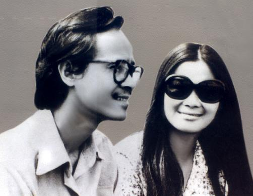

Hôm ấy anh Sơn vừa trải qua bạo bệnh, anh vốn gầy lại càng mong manh và hư ảo hơn trong nắng hanh vàng đượm màu phù dung xứ Huế. Với cái thân thể nhu mì ấy, sáng qua, trưa đến, chiều đi, anh Sơn vẫn say sưa đáp trả với tôi về những điều mà cả hai tâm đắc, nhất là những ý niệm về những cái chết sinh thành trên sự sống hiện hữu qua hàng trăm ca khúc, hình thành nên một con đường sáng tạo độc đáo giữa bầu trời tân nhạc Việt Nam mà hầu như chưa bao giờ anh tiết lộ. Ngại anh Sơn mệt, một người bạn gái mời anh nghỉ ngơi nhưng anh nhẹ nhàng từ chối: Hãy để anh ngồi lại, để anh được phục sinh với người bạn trẻ này! Anh Sơn đã làm như anh nói, rằng trong đời sống con người cần phải thức tỉnh trong từng sát na như khi uống một ly bia thì hãy tận hưởng một cách toàn diện cảm giác sung sướng của ly bia nên anh vẫn ngồi và thức tỉnh với tôi bằng một cuộc chơi ngôn ngữ lang thang qua mọi nẻo đường triết học và âm nhạc. Bằng giọng buồn như một tiếng thở dài hoang hoài, anh hát cho tôi nghe một đoản khúc về Huế "đêm nghe gió thở dài, đêm nghe tiếng khóc của bào thai, nghe trong gió thở dài, nghe lăng miếu trùng vây, nghe xa cách cuộc đời nghe lăng miêu cạnh đây”. Anh trầm ngâm giải thích, đó là không khí chỉ Huế có, yêu Huế yêu cả tâm hồn Huế đến thế là cùng, vậy mà có người trách khéo anh sao anh không viết về quê nhà vì hầu như chữ “Huế” không có trong ca khúc của anh.
Quê nhà đích thực của anh nơi đâu? Quê nhà của anh không phải là Huế, không phải cõi chết như A.Camus quan niệm bởi chính anh lần đầu tiên đã cho tôi, cho người đời một tưởng tượng đến là ngạc nhiên về "quê nhà của mình". “Quê nhà gần gũi nhất của anh Sơn, Hải biết không đó là bào thai của mẹ! Nằm trong bào thai hơn chín tháng mới ra đời nên đôi lúc buồn nhớ là nhớ đến chỗ nằm trong bào thai mẹ!” Tôi lặng đi trước tâm tình siêu hình nhưng cũng nồng nàn hiện sinh của anh Sơn. Hèn chi, trong nhiều ca khúc rất "da vàng" của anh, hình tượng bào thai thường hay lãng đãng nhú mầm khắp nơi. Có lần, lang thang với người bạn gái xứ Phù Tang Mikodhico - một thực tập sinh về khảo cổ học, tôi nghe nàng thỏ thẻ: 'Em bên kia nhìn hoa đào rơi mà cứ ngỡ từng bào thai, từng cánh nhạc Trịnh Công Sơn hóa thân giữa tuyết trắng cuộc đời”. Nhạc của anh Sơn không phân biệt giới tính, dân tộc hay tính cách của từng vùng người, nó rong chơi khắp chốn bởi nơi đâu nó cũng có một cõi đi về với những điều mà con người tôn thờ, sợ hãi và hy sinh thanh thản trước tình yêu, cái chết và sự - sống.
Ngôn ngữ của anh là ngôn ngữ dịch biến của không gian và thời gian bởi từng câu, từng khúc khi hát đều dựng lên trong đời sống tinh thần những lâu đài, những mê cung, những thế giới khác lạ nằm ngoài tự nhiên, thế giới của cái tôi đã nhìn và đã sống nói theo điệu chơi hiện tượng học Husserl dù thế giới ấy rồi cũng phôi pha, cũng theo gió cuốn đi mà không hề mặc cảm.
Vẫn chiều hôm ấy, anh Sơn bỗng khoẻ ra. Lần đầu tiên sau những ngày bị ốm, những ly bia đã biết tươi mươi khoé môi. Anh hồn nhiên kể trong cơn nguy biến, may có người con gái xứ Lạng (lại là con gái xứ Bắc) thương anh nên gửi thư bày món thuốc cá chép nấu cách thủy với rau diếp cá. Tanh tao lắm nhưng phải uống, uống vì tình thương và uống để cứu mình với đời vì "nỗi ám ảnh lớn nhất, đeo đẳng tôi từ thuở còn nhỏ cho đến sau này vẫn luôn luôn bị ám ảnh là cái chết và sự mất mát... Suy cho cùng là quá yêu cuộc sống, sợ mất mát nó đấy thôi!". Để vượt và vươn qua sự mất mát và cái chết, anh Sơn đã tìm cho mình một con đường mà anh tận trung với nó bằng cái tôi sáng tạo nghệ thuật khác lạ "Ngay từ lúc còn trẻ cho đến mãi sau này, tôi nghĩ đã đi vào nghệ thuật thì phải chứng tỏ một dấu ấn riêng, một chỗ đúng rất riêng về cái tôi. Thông thường cái tôi thật đáng ghét nhưng trong nghệ thuật phải có cái tôi rõ ràng... Cái gì không độc đáo thì không thể tồn tại lâu dài được! Có phải âm nhạc của anh độc đáo bởi ta nghe trong đó toát lên những âm vực Tứ Diệu Đế (Sinh, Lão, Bệnh, Tử) của Phật giáo hay những đèo dóc lo âu hoang mang phi lý về hữu hạn và vô hạn, về hữu thể và vô thể không ngừng nhấp nhô tính cách trong quảng cung la thứ? Không biết bao người, trước và sau khi anh Sơn ra đi, bằng tư duy kinh viện đã biến âm nhạc anh Sơn lạc biến trong cõi triết, thậm chí ràng buộc anh vào những bến bờ tôn giáo Phật, Lão và cả Thiên Chúa! "Mình chưa bao giờ bị sự ràng buộc vì khi nào cảm thấy một sự ràng buộc nào đó, làm cho mình không thoải mái là mình tìm cách thoát ra ngay tức khắc.
Bao nhiêu lần thoát được cảnh ngộ tù túng rồi, mình luôn luôn đứng bên lề sự tù túng”. Anh hoàn toàn là con người tự do và chân thành tột cùng, với chính cuộc sống "Phải chân thành với cuộc sống thì cuộc sống sẽ cho anh, trả lại anh những điều gì cần để phải nói trong nghệ thuật”. Huế và đạo Phật đã nuôi nấng anh Sơn lớn dậy nhưng để bất tử trước sau anh mãi mãi là một kẻ tình ca tự do luôn luôn lĩnh hội mà không bị hòa tan, không bị tàn phá bởi những triết thuyết cũ kỹ. "Trong sâu xa của tâm hồn có một sự phản kháng triền miên, phản kháng theo kiểu âm thầm chứ không phải phản kháng theo kiểu nổi loạn đập phá. Bởi vì không thể đập phá được, nếu đập phá thì tất cả những gì mình sợ mất mát sẽ chóng mất mát hơn. Có thể ở đây có một sự phản kháng tiềm tàng trong suy nghĩ!". Bằng sự phản kháng tiềm tàng ấy, anh đã "thay thế hệ mình để nói về những điều ai cũng nghĩ đến là tình yêu, cuộc sống và thân phận con người”. Cái điều ai cũng nghĩ nhưng không phải ai cũng có thể hát trừu tượng như anh. Nếu như Đặng Thế Phong là khởi nguồn nỗi đau, Phạm Duy một hư ảo giữa hai bờ buồn vui vô thường, Văn Cao thượng thanh khí với những tiết trời thiên thai thì Trịnh Công Sơn là kẻ bình tĩnh hứng chờ, cứu rỗi nguồn đau cõi tục lụy này. Anh cứu rỗi nguồn đau với một thái độ an nhiên tự tại kể cả lúc đối mặt với cái chết. Hư vô hay cái chết không còn là một đối trọng để người ta lầm tưởng về anh như một người chiến binh, một kẻ thuyết khách mang dòng máu Sisyphus. Trong trí tưởng tượng của anh Sơn, “chết là một sự trở về trong lễ đón đầy hoa quả. Khi đứa con hoang đi lạc trở về, làng xóm người ta cũng vui mừng. Có lẽ cũng có cha mẹ, làng mạc ở quê hương xa xưa đón chào!". Đôi mắt anh Sơn rực rỡ giữa ánh chiều tà, dường như anh đang mơ màng đối thoại với linh hồn ai đó hơn là với tôi. Nghe anh, đặc biệt đọc ca từ - thơ, nhất là những đoạn kết của một ca khúc, dù rong rã và u trầm bao nỗi buồn thì cuối cùng anh vẫn nhiệt nồng hy vọng, cứu rỗi, giải thoát đời sống ra khỏi ảo ảnh hữu thể và vô thể “đường nào dìu tôi đi đến cơn say / một lần nằm mơ tôi thấy tôi qua đời / Dù thật lệ rơi lòng không buồn mấy / giật mình tỉnh ra ồ nắng lên rồi” (Bên đời hiu quạnh) hay “Tôi con chinh thanh bình / mơ được sống hồn nhiên / như hoa trên đồng xanh / một sớm kia mai hồng" (Như chim ưu phiền). Anh diễn ca về hư vô mà không bị hư vô hóa, anh niệm kinh bằng giai điệu tục lụy, anh nhuần ấm hiện sinh nhưng không bải hoải, anh triết lý nhưng lời nhạc cứ xanh tươi cây đời. Như mũi tên mang cái tôi độc đáo vượt qua mọi triết thuyết, anh rút ngắn khoảng cách giữa mình và người. 'Tôi nghĩ trong nghệ thuật, điều quan trọng nhất là làm thế nào để mở ra một con đường ngắn nhất đi từ trái tim của mình đến trái tim của người mà không cần cắt nghĩa gì thêm”. Xin đừng cắt nghĩa anh Sơn bằng những triết thuyết, hãy để anh được anh nhi với tính Việt độc đáo của mình. Tâm tính của một dân tộc luôn luôn có trước triết học. Ngày xa xưa ấy Mỵ Châu và Trọng Thủy nào hay Đức Phật hay Jésus mà Mỵ Châu cũng đủ sức hóa giải ân oán hận thù của chiến tranh bằng diễm ca: “Hỡi chim Lạc và hoa đào / Tiếng rì rào của trúc bên dòng nước ơi / mây hồng quyện hoàng hôn / cầu vồng hai ta / cầu vồng hai ta / gặp nhau giữa giải Ngân Hà/ Hồn tôi nhẹ lâng lâng..." trong nhạc kịch opera Mỵ Châu - Trọng Thủy của nhà soạn nhạc tài danh Nguyễn Thiện Đạo. Giữa hai nhạc sỹ Trịnh - Nguyễn không phân tranh như một hồi kịch của lịch sử xa xưa mà đều có chung một chí hướng “Cái gì thuộc về dân tộc thì nó sẽ tồn tại vĩnh cửu. Trịnh Công Sơn là tiếng lòng của dân tộc vì vậy anh chẳng bao giờ phôi pha!" - Nhạc sĩ Nguyễn Thiện Đạo từng tâm sự với tôi như vậy. Anh Sơn không nói mà hát thay cho thế hệ mình không những về một giai đoạn lịch sử bi thương, anh còn hát về những điều vốn có trước và sau này sẽ xuất hiện trong lòng dân tộc Việt, trong lòng nhân loại. "Chúa đã bỏ loài người / phật đã bỏ loài người / này em xin cứu một người / này em hãy đến tìm tôi / vì những con sông đã cạn nguồn rồi / vì gió đêm nay hát lời tù tội quanh đời / về cùng tôi đứng bên đời âu lo này" (Này em có nhớ). Hãy lo âu với chính cuộc đời này chứ không phải lo âu trước hư vô là thông điệp của anh Sơn. Lo âu nhưng hãy yêu ngày mới dù quá mệt kiếp người "Định mệnh cho phép mình được làm một người liên hệ mật thiết với nghệ thuật. Nếu có kiếp sau nào đi nữa thì mình cũng là nghệ sĩ. Nghệ sĩ sống khoẻ, thoải mái trong cuộc đời này.Muốn yêu cỏ thì yêu cỏ, muốn yêu hoa thì yêu hoa. Tự do tự tại là con người của mình!". Đó là lời cuối cùng lúc chia tay anh nói với tôi với nhân gian này. Và có thể đối với ai đó mùa xuân này vắng đi một tiếng Sơn ca nhưng với tôi anh Sơn chẳng bao giờ đi xa, ngược lại anh vẫn là mùa xuân đang thay lá thay hoa thay mãi đời ta, thành tiếng trống thu không trên những miền biên giới gọi giấc ngủ chiều lạc lối trở về, ru nồng thân phận con người, như tiếng chuông u minh thức tỉnh chốn trần cũng như cõi âm cùng nhau đi tới chân trời thiện mỹ.
Tia sáng, số 4/2002